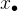
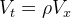

| テスト理論 |
| テスト理論 |
今、テストが 項目から成り立っており、観測値
項目から成り立っており、観測値 （
（ ）がすべて強平行測定によるとする。 このとき、すべての
）がすべて強平行測定によるとする。 このとき、すべての についてである1。
についてである1。
また、テストの合計得点の信頼性は、
| (42) |
となる。式(42)を、Spearman-Brownの公式という。
強平行測定の定義より、どのようなについてもとしてよい。
従って、
 |
(43) | |||
 |
(44) | |||
 |
(45) | |||
|
(46) |
である。 つまり、真値間の共分散はどの項目間でも等しく、観測値間の共分散は真値間の共分散に等しい。
また、信頼性係数の定義より
|  | (47) |
である。これらを利用して、
| (48) | ||||
|
(49) | |||
|
(50) | |||
|
(51) | |||
|
(52) |
となる。 [証明終わり]
Spearman-Brownの公式は、各項目の信頼性が一定であれば、テストに含まれる項目数が大きくなるほど合計得点の信頼性も高くなることを示している。 つまり、信頼性の高い評価をするには項目数が多いほどよいということである。 これは、多枝選択式などを利用して多くの項目を設けた方が、テスト得点の信頼性を高く保つ上で有利であることを示している。
Figure 6 は、Spearman-Brownの公式をもとに、項目の信頼性が0.5、0.8である場合に、項目数によって合計得点の信頼性がどのように変化するか図示したものである。 項目単体の信頼性が極端に低くない限り、項目数をある程度多くすることでテスト得点の信頼性はかなり高められることがわかる。
Footnotes
について等しいことから明らか。| テスト理論 |